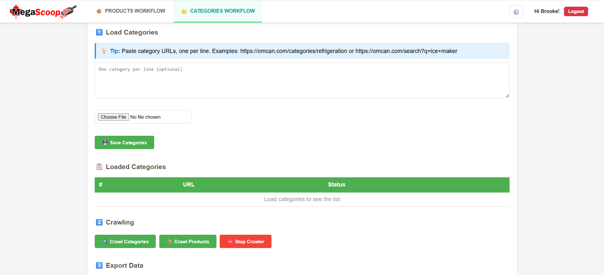
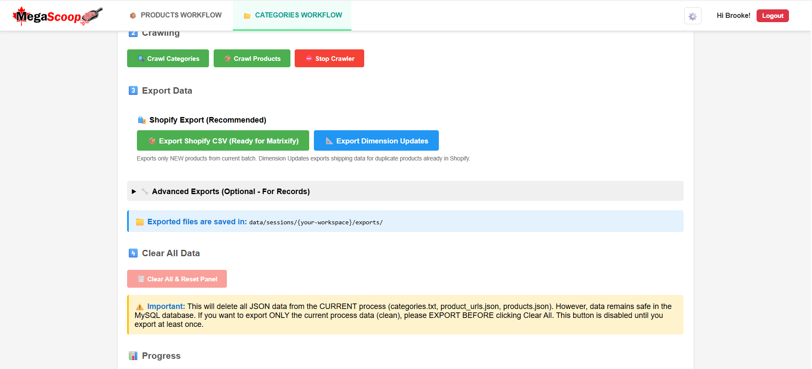
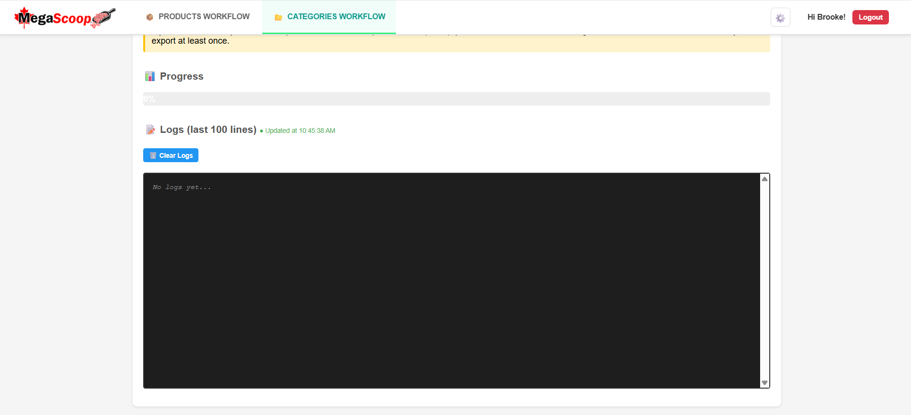
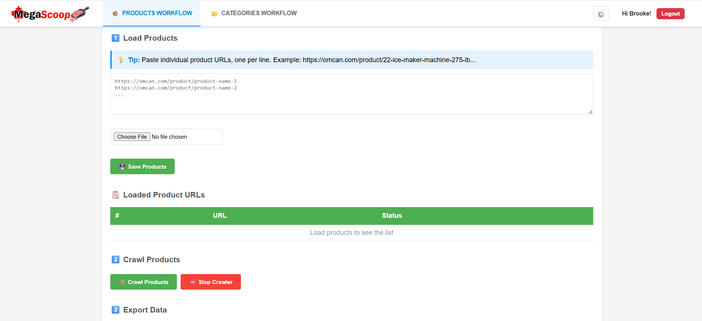
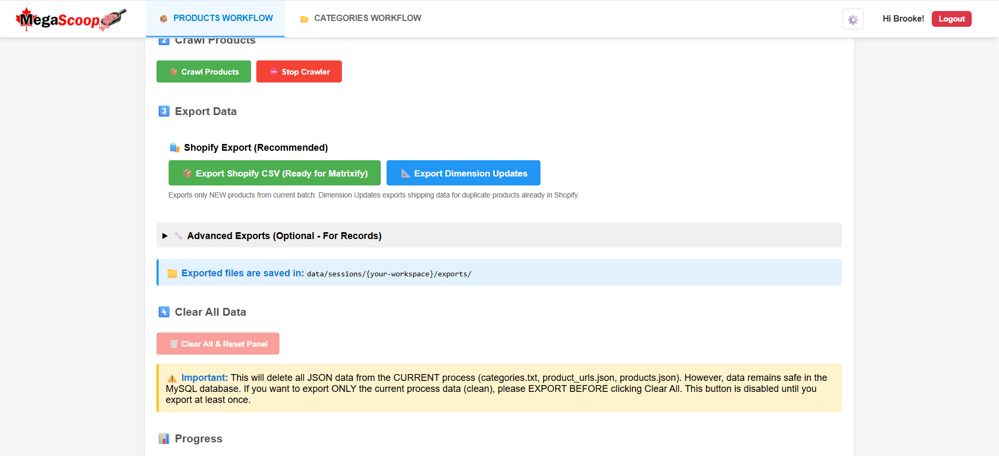
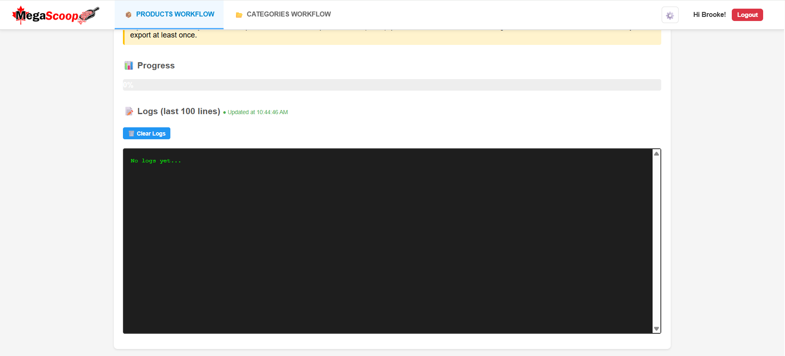

MegaScoop — Shopify Product Automation Tool
Built during my software development practicum at Mega Food Equipment. A tool that turns raw supplier data into Shopify-ready listings — cutting product import time by 93%.
Mega Food Equipment manages a catalog of 2,000+ products sourced from three suppliers — Omcan, Atosa, and BakeMax. Before MegaScoop existed, there was no import process at all. Operators manually visited each supplier page, copied product data, downloaded images, and entered everything into Shopify by hand — around 30 minutes of work per product. The process was slow, error-prone, and couldn't scale alongside the growing catalog.
MegaScoop replaced that entirely: scraping supplier websites, downloading images, and generating Shopify-ready import files automatically, with safeguards to prevent data loss on products already in the store.
The first version of MegaScoop only supported one operator at a time — a second person starting a job would overwrite the first's progress, logs, and exports. My teammate and I designed a session-based workspace isolation system together: every operator gets a unique session ID, and all scraped products, logs, progress tracking, and exports are scoped to that session. This involved:
- Designing the session model and adding session_id to the core database tables
- Building session_workspace.php to manage session creation and file isolation
- Updating progress tracking and export systems to filter by session
Re-importing a product that already exists in Shopify risks overwriting descriptions, images, and metadata operators had manually corrected. My teammate spearheaded this system, with me contributing to the database side and integrating it into the dimension pipeline — checking each product's normalized SKU against a Shopify export before any images are downloaded or import rows generated.
Many products in Shopify were missing shipping dimensions, affecting carrier rate calculations. Rather than risk overwriting existing data through a full re-import, I built a separate dimension-only export workflow. This involved:
- Extending each supplier scraper to extract and normalize shipping dimensions
- Adding dimension fields to the product and archive database tables
- Building shopify_dimension_exporter.php, a Matrixify-compatible CSV exporter targeting only shipping fields
- Scoping the workflow per-session so operators could run dimension updates independently
I designed and maintained the MySQL schema across four major versions (v2.2 through v3.2), including a dual-table architecture separating active batches from a historical archive, session isolation, shipping dimensions, product notes, and Shopify metadata — all added without breaking backwards compatibility, with migration scripts for each version upgrade.
The original interface used a dual-accordion layout that mixed category and product workflows in a way operators found confusing. After observing how the tool was actually used, I redesigned it into a clearly separated two-tab system — a Categories Workflow tab and a Products Workflow tab — plus a settings menu for preferences like language switching.
When my teammate and I inherited the project, the scraping logic was a single monolithic file built exclusively for Omcan. Extending it to support more suppliers and more complex data would have been unmanageable without a structural overhaul, so we refactored it into a proper OOP architecture:
- BaseScraper — abstract base class with shared scraping logic, duplicate detection hooks, and image downloading
- ScraperInterface — a contract enforcing consistent behaviour across all scrapers
- ScraperFactory — selects and instantiates the correct scraper based on the product URL
- Supplier-specific scrapers — Omcan, Atosa, and BakeMax, each encapsulating its own extraction logic
I was primarily responsible for the Atosa scraper, collaborated on the Omcan scraper, and my teammate led the BakeMax scraper. Atosa was particularly challenging — product pages across the site don't use consistent HTML, so the scraper had to handle multiple layouts and fallback cases rather than one reliable structure.






A shared database and file system meant one operator's export could silently overwrite another's. Session IDs thread through every database write, log entry, export file, and progress bar — operators work in parallel with no awareness of each other's jobs.
Products in Shopify often had corrections that didn't exist in the supplier data. The duplicate detection system ensures the scraper never touches a product that already exists in the store, even when SKU formats don't match between systems.
A full product re-import to fix shipping dimensions would overwrite everything else Matrixify touched. The separate dimension export targets only shipping fields via Shopify's variant-level import format, leaving the rest of the product untouched.
Built by a team of three. The original MegaScoop was created by a third teammate; my teammate and I joined the project and took it from v2.2 to v3.2. My primary focus was the shipping dimension pipeline, database design and migrations, the scraper architecture refactor, and the UI redesign. My teammate co-led the session system, spearheaded Shopify duplicate detection, and led the BakeMax scraper. Our third teammate built the original tool and its internationalization system (English, French, Spanish).